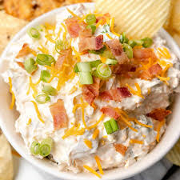

Home
Million Dollar Dip

Description
Formerly known as 'Neiman Marcus dip,' this million dollar dip tastes just like it sounds.
I've had more than a few cheesy dips in my day, but this is by far the richest and most delicious one yet!
Served with crackers and garnished with green onions and bacon, this dip is sure to be a huge hit at your next party.
Ingredients
- ½ cup slivered almonds
- 6 slices bacon, or more as needed
- 1 ½ cups mayonnaise
- 1 (8 ounce) package sharp Cheddar cheese, shredded
- ½ cup thinly sliced green onions
- 1 pinch cayenne pepper
Steps
- Toast almonds in a saucepan over medium heat until lightly golden.
- Place bacon in a large skillet and cook over medium-high heat, turning
occasionally, until crispy and evenly browned, 8 to 10 minutes. Drain and cool
slightly before chopping into bits.
- Combine mayonnaise and Cheddar cheese in a mixing bowl. Toss in bacon,
green onions, almonds, and cayenne. Stir with a spatula until combined. Wrap
and chill in the fridge at least 1 hour before transferring to a serving bowl.